← 返回阅读库 · 原论文目录
论文讲解阅读文档 · 机器人学 · v104
DreamVLA: A Vision-Language-Action Model Dreamed with Comprehensive World Knowledge
视频时长 00:09:11；讲解文字 4,134 字符；提取讲解画面 86 张。按视频原顺序阅读，每段文字保留时间戳。
文字来自整段视频的自动语音转写，按自然停顿分段，并与 PPT / 论文页面 / 演示画面对齐。未将讲解压缩为摘要；术语、数字和口述公式请结合画面及原论文核对。 阅读稿已校正规范部分明确术语误识别；原始逐字稿和每处修改记录另行保留。
讲解画面为源视频截图（640×360），不是可编辑 PPT 文件。全片按每秒 2 帧扫描内容变化，逐步展开页保留；连续动画保留代表画面。清晰度受源视频限制。
下载完整资料包 · 含离线 HTML、PDF、Word、全部 PPT 画面和字幕。
原论文与材料
DreamVLA: A Vision-Language-Action Model Dreamed with Comprehensive World Knowledge · 下载完整 PDF（30 页）
按时间阅读
00:00:00–00:00:09 · 画面 001
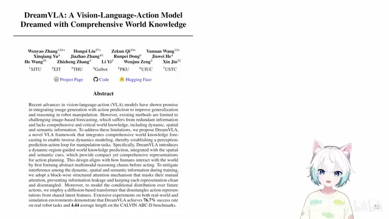
00:00:00–00:00:09 · 画面 001大家好啊，今天我们来快速水一篇论文 DreamVLA: Vision Language Action ModelDreamed with Comprehensive World Knowledge。那这篇论文的核心的点呢，在于我的一个 VLA，我的一个 Policy，它本质上就是拿当前的 Observation，然后生成一个 Action 来给下一个时刻执行，或者是一个 Action Chunk 来给下面很多步执行。那么在这个生成的过程中呢，直接生成当然是一个路子。
00:00:09–00:01:19 · 画面 002
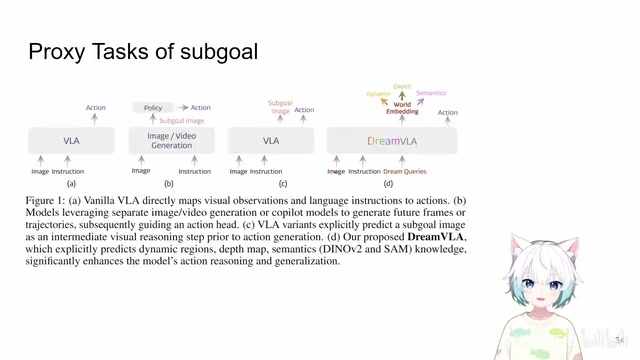
00:00:09–00:01:19 · 画面 002但是呢我们已经有研究注意到了比如说我把这个 subgoal image 弄出来或者是其他的像 ecot 那样子的 chain of thought 这样子加一些额外的信息进来能够帮助我们的 vla 特别是这种 transformer 的模型更好的去生成未来的结果那这篇文章呢就在之前的这种 subgoal image 的基础上加入了更多的特化的这种 embedding 这种额外的信息比如说像 robot dynamic Image Depth 还有 Semantic Segmentation 这样的信息而这些信息是通过传统的 CV 工具 Depth Anything SAM 或者是 DINO 这样的模型来给它给出的通过这种设计把这些额外的 CV 的模型的信息拿到我们 VLA 决策过程中相当于增加了一些额外的条件来帮助我们的 VLA 产生更好的 action 这就是这篇的核心的思路
00:01:19–00:01:20 · 画面 003
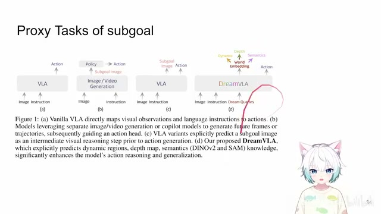
00:01:19–00:01:20 · 画面 00300:01:20–00:01:21 · 画面 004
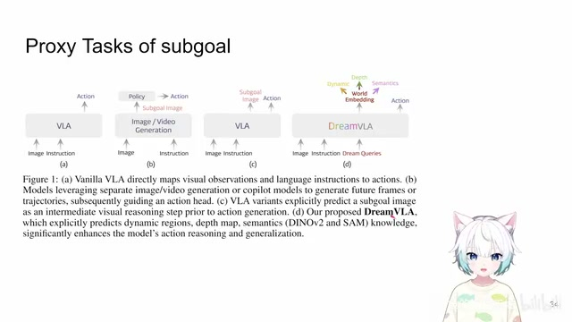
00:01:20–00:01:21 · 画面 004那么下面我们来看它具体的模型啊就是整个结构是这样子的你看现在这个 va 的结构基本都差不多都收敛到这种程度了一开始呢是这个 text encoder 这个 clipstate encoder 啊它是就是 mlp 嘛然后 vision encoder 这里用的是 mae 的 vision encoder 然后呢这里加几个 query
00:01:21–00:01:56 · 画面 005
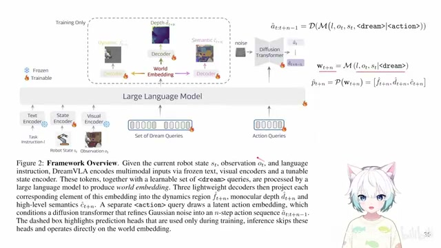
00:01:21–00:01:56 · 画面 005它就有点像最开始像 DETR 这种很老式的 transformer 的一样的东西 query 后面变出来这些 token 这些 token 后面在跟对应的 decoder 每一个 decoder 用测定的 CV 的模型来做监督还是对吧这一块东西它只在训练的时候用来传递这种 T2 的信号你实际推理的时候你这个 decoder 就不用推理了只是这一块
00:01:56–00:01:57 · 画面 006
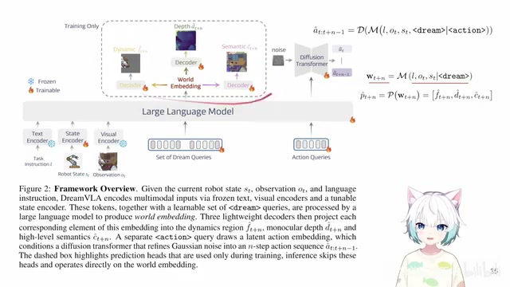
00:01:56–00:01:57 · 画面 00600:01:57–00:02:02 · 画面 007
00:01:57–00:02:02 · 画面 00700:02:02–00:02:03 · 画面 008
00:02:02–00:02:03 · 画面 00800:02:03–00:02:12 · 画面 009
00:02:03–00:02:12 · 画面 009然后呢 action query 经过 transformer 之后再作为 condition 加到 diffusion policy 里面这样子呢生成 action 所以整个这个结构是一个很经典的结构那重点就是加入了一串这个 dream queries 这些 query 它后面会接 decoder 那这些 decoder 呢会把我们其他模型的这些信息给它蒸馏到这个 large language model 里面
00:02:12–00:02:13 · 画面 010
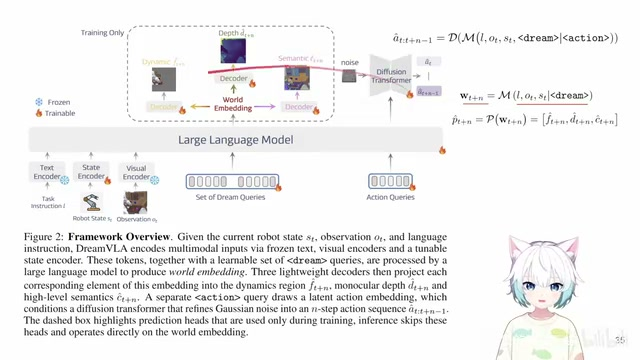
00:02:12–00:02:13 · 画面 01000:02:13–00:02:17 · 画面 011
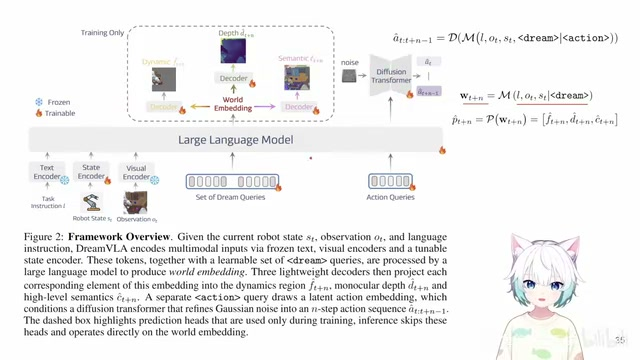
00:02:13–00:02:17 · 画面 01100:02:17–00:02:18 · 画面 012
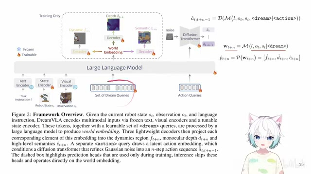
00:02:17–00:02:18 · 画面 01200:02:18–00:02:24 · 画面 013
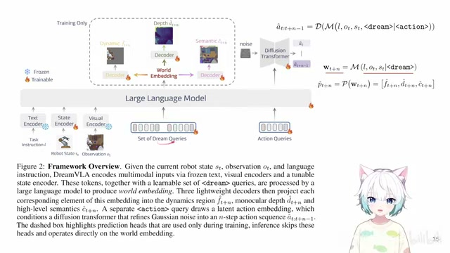
00:02:18–00:02:24 · 画面 01300:02:24–00:02:25 · 画面 014
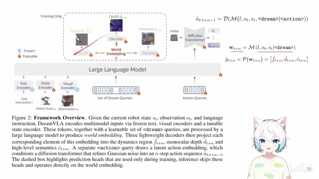
00:02:24–00:02:25 · 画面 01400:02:25–00:02:48 · 画面 015
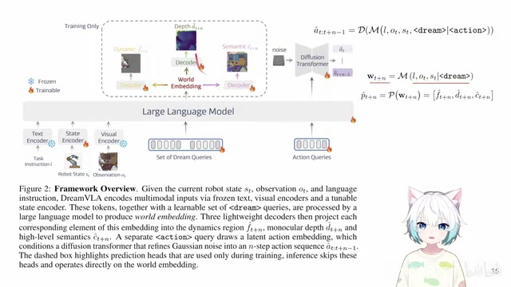
00:02:25–00:02:48 · 画面 015还有一点就是它预测的不是当前时刻的它是预测当前时刻之后 N 个时刻的 Dynamic Depth Semantic 这是它实现的一个细节因为它的设计跟 subgoal 是一脉相承的 subgoal 毕竟也就是未来几帧之后的图像所以它也是预测未来几帧的 Depth Semantic 这是一个设计那么再就是 Action 的生成生成未来 N 步然后它也是要考虑到
00:02:48–00:02:49 · 画面 016
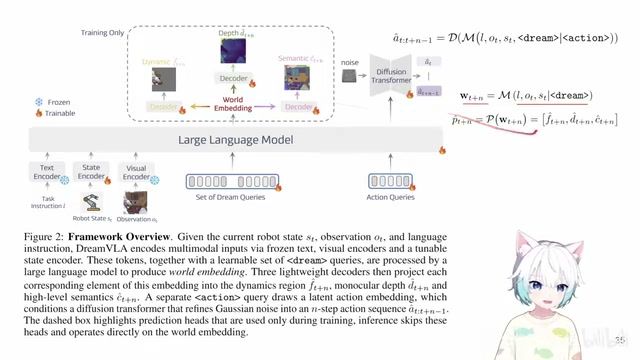
00:02:48–00:02:49 · 画面 01600:02:49–00:03:01 · 画面 017
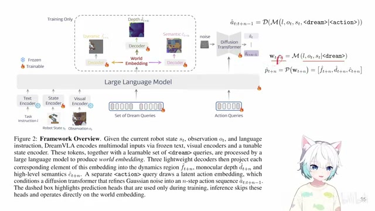
00:02:49–00:03:01 · 画面 017之前的这些所有条件包括这个 dream token 啊这些东西所以这是一个很直接的设计啊然后我们下面就可以重点关注这个 dream queries 啊他具体是有哪些 decoder 怎么实现的那这里呢主要有三种一种是 motion-centric dynamic region reconstruction 啊然后是 depth prediction 和 contrastive semantic forecasting 啊这种其实啊他们的具体的做法都很像我们一个个来看第一个就是你看这个图啊这是我未来的几张图像
00:03:01–00:03:03 · 画面 018
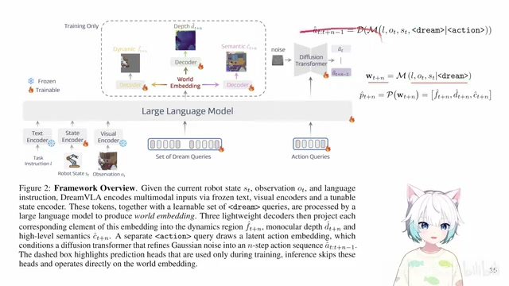
00:03:01–00:03:03 · 画面 01800:03:03–00:03:09 · 画面 019
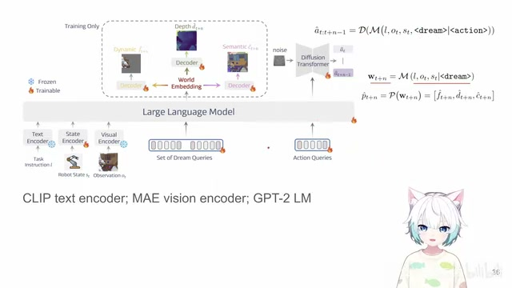
00:03:03–00:03:09 · 画面 01900:03:09–00:03:13 · 画面 020
00:03:09–00:03:13 · 画面 02000:03:13–00:03:14 · 画面 021
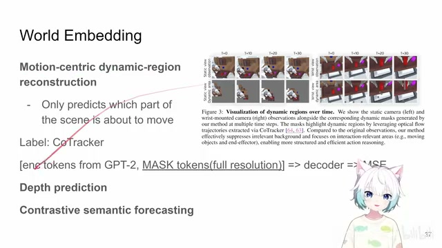
00:03:13–00:03:14 · 画面 02100:03:14–00:03:21 · 画面 022
00:03:14–00:03:21 · 画面 02200:03:21–00:03:24 · 画面 023
00:03:21–00:03:24 · 画面 02300:03:24–00:03:49 · 画面 024
00:03:24–00:03:49 · 画面 024然后我只想预测这些动了的部分的这些这部分的图像包括这个也是你看 gripper 它没有动我就不用预测了我只预测动了的部分那么这是他的想要干的事情那么当然这种区域怎么获取呢你就用 CoTracker或者是甚至是各种光流的方法都可以获取
00:03:49–00:03:50 · 画面 025
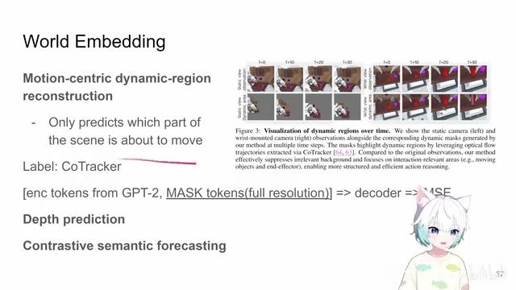
00:03:49–00:03:50 · 画面 025对吧
00:03:50–00:04:00 · 画面 026
00:03:50–00:04:00 · 画面 026那重点是你要怎么预测这个东西作者这里的结构呢跟这个 MAE 很像但是呢它实际的推理又不是 MAE我们一开始说了
00:04:00–00:04:01 · 画面 027
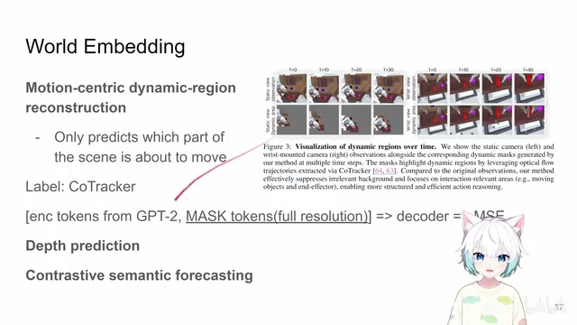
00:04:00–00:04:01 · 画面 02700:04:01–00:04:26 · 画面 028
00:04:01–00:04:26 · 画面 028对吧我们有一些 token从我的这个 GPT从我的这个 language model 里面出来这些 token 作为一个前缀同时呢作者在这个序列里面填充了足量的 mask token然后加 positional encoding那当我说足量的时候意味着就是这些 mask token本身你 decode 出来它就是一张完整的图像实际上你过了 decode 之后你就是用这些 mask token
00:04:26–00:04:27 · 画面 029
00:04:26–00:04:27 · 画面 029对应的 token 去 decode 这张图像
00:04:27–00:04:33 · 画面 030
00:04:27–00:04:33 · 画面 030你前面这些 prefix token 是不管的然后你就是这一串 token
00:04:33–00:04:35 · 画面 031
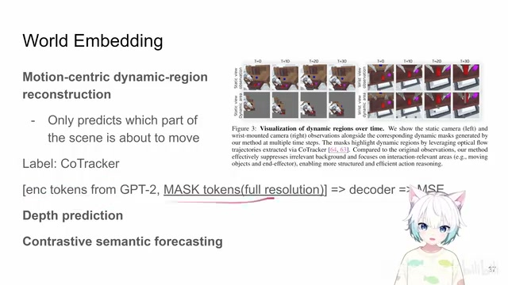
00:04:33–00:04:35 · 画面 031给它串起来然后呢
00:04:35–00:04:47 · 画面 032
00:04:35–00:04:47 · 画面 032加 positional encoding送到 decoder 里面用 mse 去加 loss然后 mse 呢只加在这些有变化的图像有变化的这些区域这些 patch 里面那么这个呢
00:04:47–00:04:48 · 画面 033
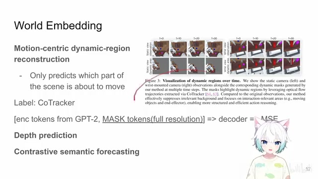
00:04:47–00:04:48 · 画面 033就是作者设计的
00:04:48–00:04:53 · 画面 034
00:04:48–00:04:53 · 画面 034去预测未来会变化的图像的区域的像素的值这是它的第一块
00:04:53–00:04:55 · 画面 035
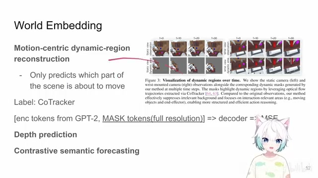
00:04:53–00:04:55 · 画面 035那第二个呢
00:04:55–00:05:02 · 画面 036
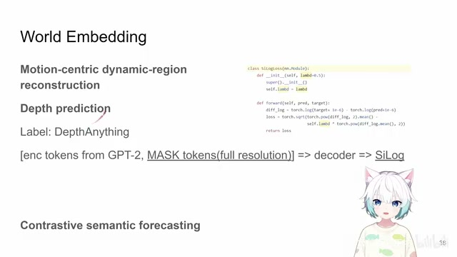
00:04:55–00:05:02 · 画面 036是 depth prediction那就是预测未来 n 步之后的这个图它的 depth 的情况那么它的 label 呢
00:05:02–00:05:03 · 画面 037
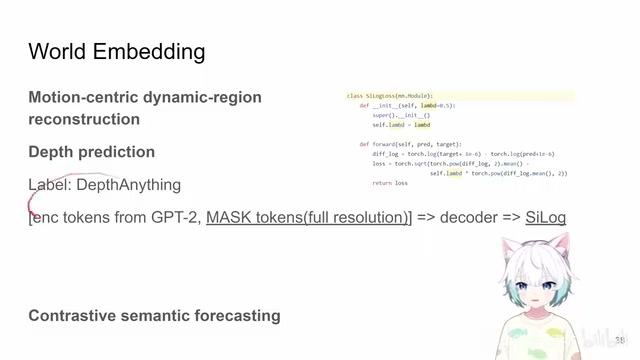
00:05:02–00:05:03 · 画面 037是用 depth anything
00:05:03–00:05:13 · 画面 038
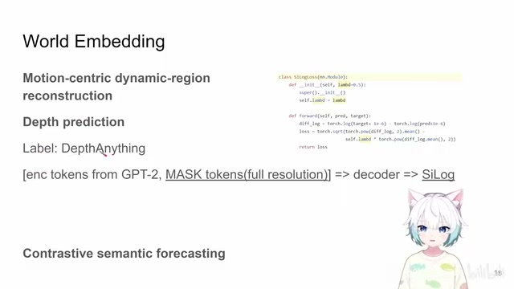
00:05:03–00:05:13 · 画面 038是一个挺不错的模型给它产生的然后呢它的重建的方法也是你这里有额外的 dream token在这个 GPT 里面拿到 dream token然后呢
00:05:13–00:05:14 · 画面 039
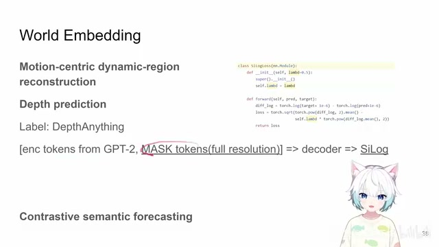
00:05:13–00:05:14 · 画面 039跟 mask token 再串起来
00:05:14–00:05:15 · 画面 040
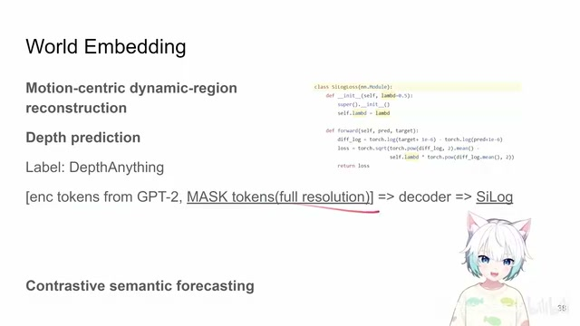
00:05:14–00:05:15 · 画面 040还是 decode decode 完之后呢
00:05:15–00:05:19 · 画面 041
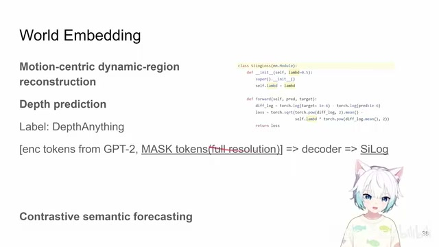
00:05:15–00:05:19 · 画面 041还是加 loss 嘛这次 loss 是加在一整张图上了然后呢
00:05:19–00:05:25 · 画面 042
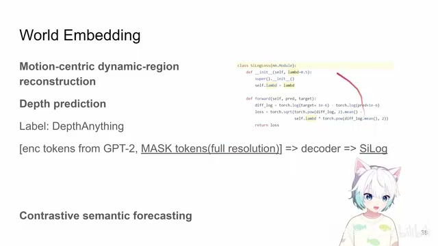
00:05:19–00:05:25 · 画面 042具体的 loss 用的是这个 clog看到它的实现就是这样也是很直接的一个写法那这样子呢
00:05:25–00:05:26 · 画面 043
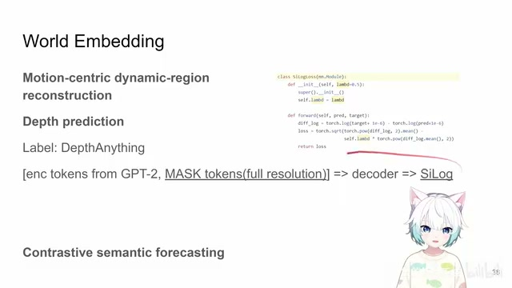
00:05:25–00:05:26 · 画面 043就把这个 decoder
00:05:26–00:05:31 · 画面 044
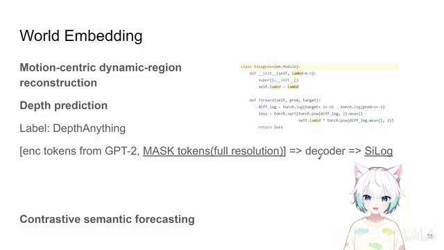
00:05:26–00:05:31 · 画面 044depth prediction也训练好了到这两个是相对容易的那最后一个是
00:05:31–00:05:40 · 画面 045
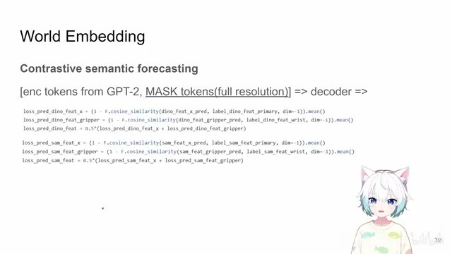
00:05:31–00:05:40 · 画面 045contrastive semantic forecasting这里呢semantic 呢作者用的是这个 sam 和 DINO当然这些 mask decoder这些推理的方式是一样的
00:05:40–00:05:41 · 画面 046
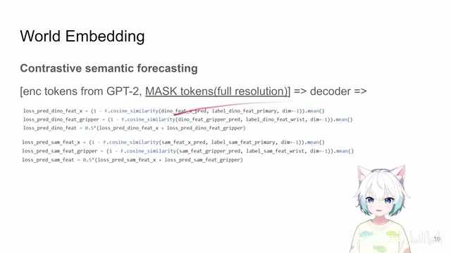
00:05:40–00:05:41 · 画面 046只不过最后它用的是
00:05:41–00:05:49 · 画面 047
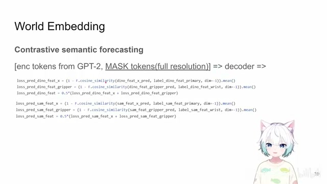
00:05:41–00:05:49 · 画面 047一减去 cos similarity这样的方式来让我预测出来的DINO 的 feature跟 Ground Truth 对齐
00:05:49–00:05:51 · 画面 048
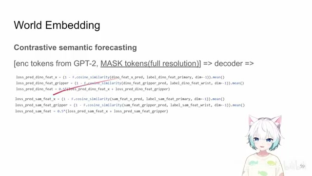
00:05:49–00:05:51 · 画面 048Sam 的 feature 跟 Ground Truth 对齐
00:05:51–00:06:05 · 画面 049
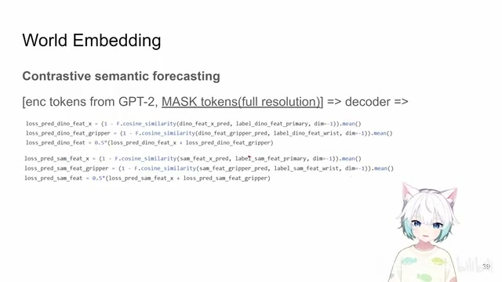
00:05:51–00:06:05 · 画面 049同时你看到它既然这么计算肯定也是考虑到一个 batch 里面Ground Truth 对应的这些样本它们的距离要尽量的近然后同一个 batch 里面不同的样本它们就要距离相应的远这是用的 info NCE 的
00:06:05–00:06:06 · 画面 050
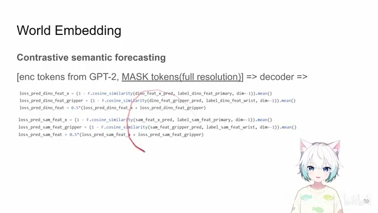
00:06:05–00:06:06 · 画面 05000:06:06–00:06:13 · 画面 051
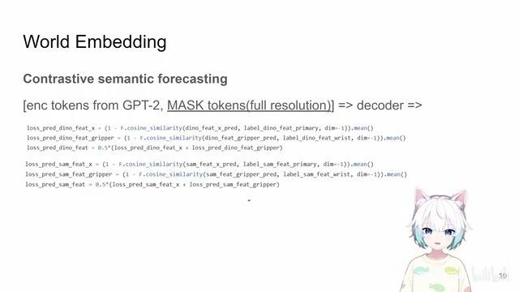
00:06:06–00:06:13 · 画面 051这样一个形式来做的但是它的 Decoder 的结构跟之前什么也都是一样的也是一个很直接的设计
00:06:13–00:06:14 · 画面 052
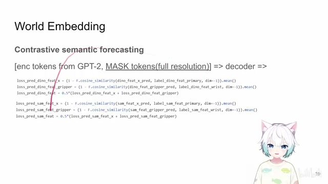
00:06:13–00:06:14 · 画面 05200:06:14–00:06:15 · 画面 053
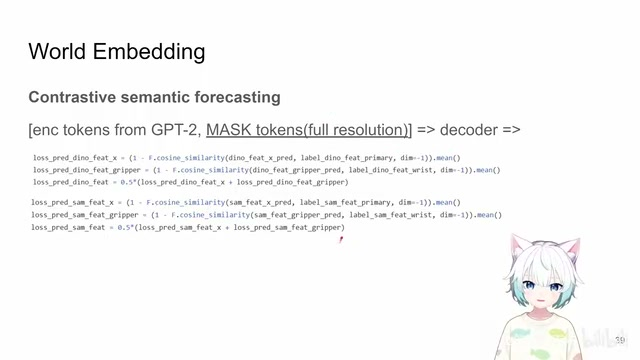
00:06:14–00:06:15 · 画面 053所以总的来说
00:06:15–00:06:18 · 画面 054
00:06:15–00:06:18 · 画面 054它用了这一串 Dream Query
00:06:18–00:06:44 · 画面 055
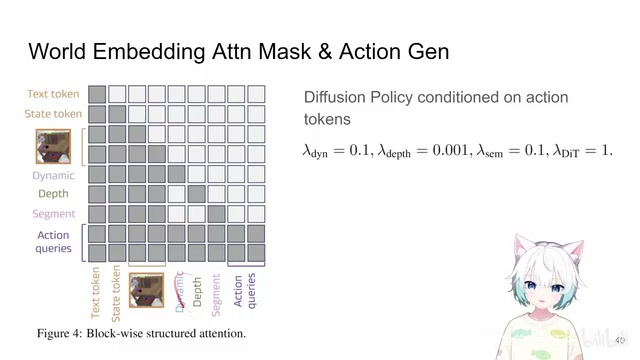
00:06:18–00:06:44 · 画面 055就是这些 Dynamic Depth Segmentation这样的一些 Query去分别接到不同的 Decoder 里面然后用这些对应的 Loss把这些已经训练好的模型的CV 的模型的信息蒸馏到 GPT 里面那自然而然的你在 GPT 里面做 Attention 的时候你就要注意了你一个模态里面的它们的 Token当然是可以相互 Attend 的但是这三个本身
00:06:44–00:06:45 · 画面 056
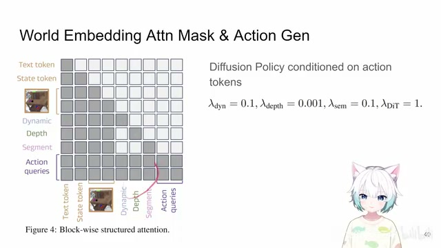
00:06:44–00:06:45 · 画面 056它们是相互独立的
00:06:45–00:06:55 · 画面 057
00:06:45–00:06:55 · 画面 057它们没有必要谁依赖于谁所以这三个它们之间是不做任何 Attention 的啊这个注意那当然你最后 action 生成的时候对吧也是要跟之前所有的 token 都做 attention 的这都是很直接的设计然后这边显示的是各个任务的他们的 loss 的权重嘛啊你看一下就好最后这个 dit 呢就是这个 diffusion policy 他的权重所以总的来说呢这篇文章是一个很直接的设计啊就是你在生成 action query 生成 action token 之前加了一组额外的这些多功能的这些 token
00:06:55–00:06:59 · 画面 058
00:06:55–00:06:59 · 画面 05800:06:59–00:07:03 · 画面 059
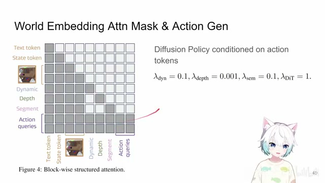
00:06:59–00:07:03 · 画面 05900:07:03–00:07:05 · 画面 060
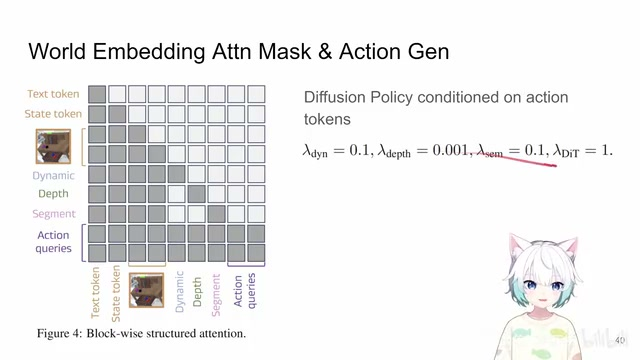
00:07:03–00:07:05 · 画面 06000:07:05–00:07:07 · 画面 061
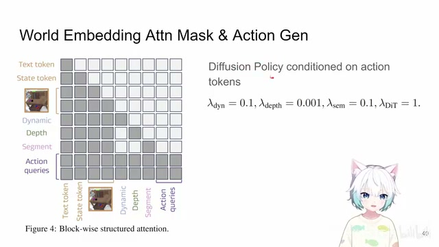
00:07:05–00:07:07 · 画面 06100:07:07–00:07:13 · 画面 062
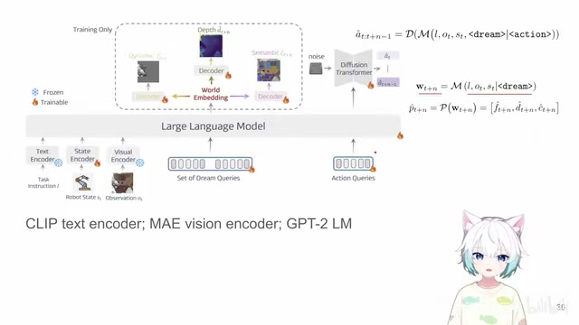
00:07:07–00:07:13 · 画面 06200:07:13–00:07:14 · 画面 063
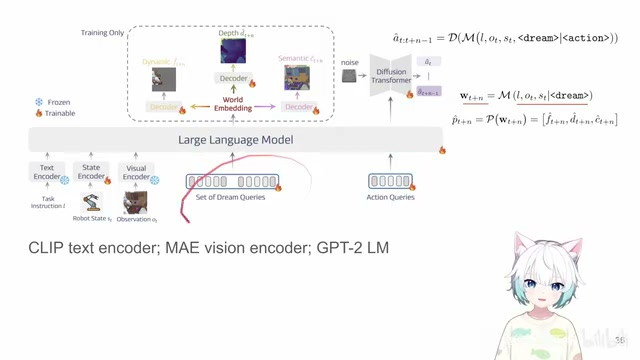
00:07:13–00:07:14 · 画面 06300:07:14–00:07:21 · 画面 064
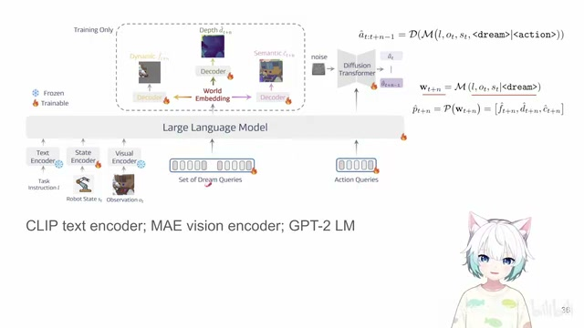
00:07:14–00:07:21 · 画面 064这些 token 后面对应的这些 decoder 会帮你把这些额外模型的信息给它蒸馏到这个模型里面来那这种设计呢原理上跟我们之前介绍的这个 sea 这篇文章是很像的如果呢它是一个 image encoder 那么当然这篇呢就分得更开一点它不是进到 vision encoder 里面而是进到单独的 token 里面这就是这篇文章的主要的一个方法
00:07:21–00:07:22 · 画面 065
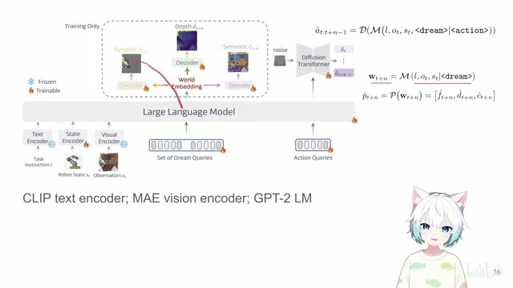
00:07:21–00:07:22 · 画面 06500:07:22–00:07:23 · 画面 066
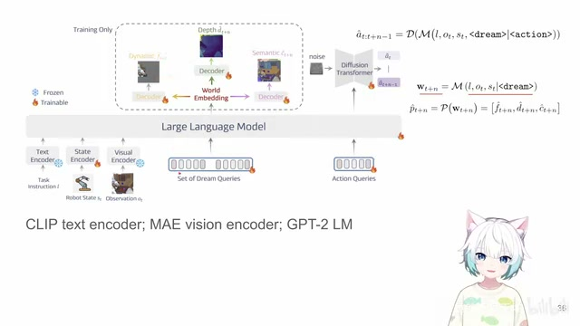
00:07:22–00:07:23 · 画面 06600:07:23–00:07:33 · 画面 067
00:07:23–00:07:33 · 画面 06700:07:33–00:07:34 · 画面 068
00:07:33–00:07:34 · 画面 06800:07:34–00:07:40 · 画面 069
00:07:34–00:07:40 · 画面 069好下面我们来看到实验的部分啊模拟实验用的是这个 Calvin 的 ABC transfer 到 D 啊整个的结果那肯定还是不错的重点看他的这个 ablation 这也是他可能是因为是文章的第一个版本吧啊这个 figure six 这这这每一个对应的每一个都是啥对吧这个这个 label 消失了啊但是你跟这个第三个表对应一下啊能够大概找一下啊哪些部分哪些任务是
00:07:40–00:07:44 · 画面 070
00:07:40–00:07:44 · 画面 07000:07:44–00:07:45 · 画面 071
00:07:44–00:07:45 · 画面 07100:07:45–00:07:47 · 画面 072
00:07:45–00:07:47 · 画面 07200:07:47–00:08:05 · 画面 073
00:07:47–00:08:05 · 画面 073有提升提升多大啊这个我们等后面作者再仔细的介绍吧或者他可能在文章里哪个地方说了但是我没有找到啊总之你知道对吧有 ablation 能够说哪部分的任务是有用的啊这个还是挺有意思那这个绿色的虚线呢就是这个 vanilla vla 那么其他的 ablation 还有像这个 attention 的结构然后几个 dream query 是不是要 share
00:08:05–00:08:07 · 画面 074
00:08:05–00:08:07 · 画面 07400:08:07–00:08:11 · 画面 075
00:08:07–00:08:11 · 画面 07500:08:11–00:08:13 · 画面 076
00:08:11–00:08:13 · 画面 07600:08:13–00:08:18 · 画面 077
00:08:13–00:08:18 · 画面 07700:08:18–00:08:19 · 画面 078
00:08:18–00:08:19 · 画面 07800:08:19–00:08:20 · 画面 079
00:08:19–00:08:20 · 画面 07900:08:20–00:08:23 · 画面 080
00:08:20–00:08:23 · 画面 08000:08:23–00:08:24 · 画面 081
00:08:23–00:08:24 · 画面 08100:08:24–00:08:26 · 画面 082
00:08:24–00:08:26 · 画面 082optic flow 和 dynamic region 还有像 dream token 的数量那像这个 auxiliary 就是你的所有的这些辅助的任务都是预测当前这一帧去尝试重建当前的这一帧的图像那 prediction 呢是预测未来 n 步之后所以这个你看还是挺关键的无论是作为 action generation 的 condition 的角度来讲
00:08:26–00:08:59 · 画面 083
00:08:26–00:08:59 · 画面 083还是说你希望把一部分做决策的能力通过这条蒸馏的路径加入到我们的模型里面等等不管你怎么解释所以预测未来是要比重建当前的结果是要好这是作者的一个观察那么当然还有更多的真机的实验感兴趣的朋友非常推荐你到原文查看好的那么以上就是我对这篇文章的一个非常快速的整理那么感谢您的收看请多多指点
00:08:59–00:09:00 · 画面 084
00:08:59–00:09:00 · 画面 08400:09:00–00:09:11 · 画面 085
00:09:00–00:09:11 · 画面 08500:09:11–00:09:11 · 画面 086
00:09:11–00:09:11 · 画面 086转写与来源说明 · 7 个自动复核提示
保留 131 个原始语音片段，7 个片段触发自动复核提示。提示仅用于定位可能的术语、重复或识别问题，不等于已确认错误。
讲解画面为源视频截图（640×360），不是可编辑 PPT 文件。全片按每秒 2 帧扫描内容变化，逐步展开页保留；连续动画保留代表画面。清晰度受源视频限制。
原视频：paper/合集_2026-10-16_机器人学/[论文简析]DreamVLA A Vision-Language-Action Model Dreamed...[2507.04447].mp4
SHA-256：4f2379a3ad2cbec2f120fd9bc9167e519fe10f703b950d03d0d8a1232aeaf337
然后加 positional encoding
加 positional encoding
是 depth prediction
是用 depth anything
depth prediction
contrastive semantic forecasting
semantic 呢
全文按视频语音与画面制作。原论文可从上方链接下载；完整资料包保留全文、原始逐字稿、字幕和校对记录。